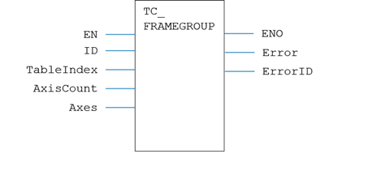
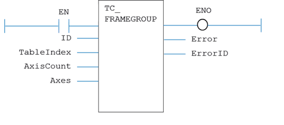

Motion Function
Issues a new FRAME_GROUP motion request for the axis specified by 'AxisNo'.
|
EN : BOOL; |
TRUE to enable the function |
|
ID : USINT; |
Frame Group Identity number |
|
TableIndex : DINT; |
Table index points to frame parameters |
|
AxisCount : USINT; |
Number of axes in Frame Group |
|
Axes[] : USINT[]; |
Array containing the axis numbers |
|
ENO : BOOL; |
TRUE when function is enabled |
|
Error : BOOL; |
TRUE if a program error is detected |
|
ErrorID : UINT; |
Returned error number |
When the EN input is TRUE, the function block applies the command to the axis group indicated by AxisNo.
A programming error, such as parameter out of range, will set the Error output and return an error ID number. For the Error ID reference, see the Trio Programming error list.
MyTC_FrameGroup(EN, ID, TableIndex, AxisCount, Axes);
ENO := MyTC_FrameGroup.ENO;
Error := MyTC_FrameGroup.Error;
ErrorID := MyTC_FrameGroup.ErrorID;

